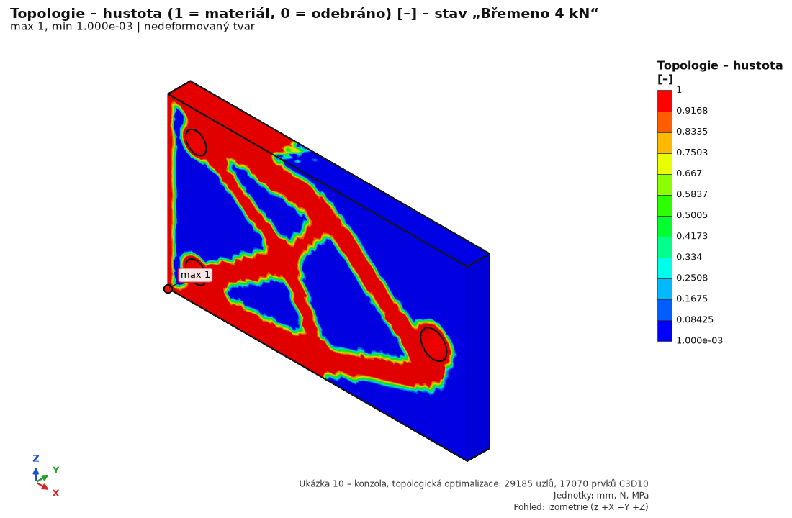

Krok Výsledky zobrazuje napětí, posuvy, bezpečnost, výsledky 3D tisku, teploty, kontaktní tlak a dynamickou odezvu jako barevné pole na modelu. Dále řez, sondu, tabulku nejvyšších míst, reakce a grafy. U každého maxima program posoudí, zda jde o skutečné napěťové soustředění, nebo o singularitu modelu.
Nahoře panelu je verdikt celé studie: nejmenší bezpečnost k mezi kluzu Re (Re / σ von Mises) v nejvíce namáhaném místě mimo singularity přes všechny mechanické zatěžovací stavy, porovnaná s požadovanou bezpečností (pole „požadováno ≥“, výchozí 1,5). Zobrazí Vyhovuje / Nevyhovuje, rozhodující případ a díl a pruh (polovina = přesně požadavek). Požadavek se uloží do studie; výsledky se kvůli němu nepřepočítávají a protokol Word jej převezme. Pod verdiktem jsou čísla zobrazeného případu: max. napětí mimo singularity a celkově (rozdíl je singularita – ostrá hrana, pevná podpora), max. posuv a výslednice reakcí. Díly bez meze kluzu (plasty, 3D tisk) se tu nehodnotí – tisk má vlastní bezpečnost Tsai-Wu / Hill. Stejná čísla pro všechny stavy jsou v dolní Tabulce (bezpečnost obarvená podle požadavku); klik na řádek ukáže jeho případ.
| Ovládání | Co dělá | Typická hodnota / poznámka |
|---|---|---|
| Zatěžovací stav | Vybere zobrazený výsledek: mechanické stavy v pořadí studie, pak tepelné stavy s předponou „Teplo:“. | Zahrnuje i „Předpětí šroubů“ (se šrouby) a „<stav> – tečení … h, … °C“ (tečení tištěného dílu). |
| Čas | Okamžik přechodového tepelného stavu („t = 600 s“…). | Jen přechodový stav. První okamžik t = 0 = počáteční teplota. |
| Veličina | Zobrazené pole (seznam níže). | von Mises [MPa]. |
| Deformace | Zvětšení deformovaného tvaru: žádná, automaticky, 1×, 10×, 100×, 1000×. | Automaticky = největší posuv se zobrazí jako 5 % úhlopříčky modelu. U tepelných stavů vypnuto. |
| Počet pásem | Počet barevných pásem mapy. | 4–16, výchozí 12. |
| hrany prvků | Zobrazí síť na povrchu. | Kontrola, kolik prvků je v místě maxima. |
| obrys nedeformovaného modelu | Původní tvar průhledně. | S deformací ukazuje směr pohybu. |
| Legenda | Meze pásem a barvy; pod ní poznámka, je-li maximum singularita. | U bezpečnosti jsou barvy obrácené: červená = nízká bezpečnost. |
| Textový souhrn | Max. posuv, max. von Mises a jeho místo, max. mimo singularity, min. bezpečnost k Re, 3D tisk po dílech, měřítko deformace, reakce, kontrola rovnováhy, varování. | |
| Tabulka nejvyšších napětí | 8 samostatných míst s nejvyšší hodnotou a jejich klasifikací. Klik na řádek označí místo ve 3D a ukáže důvody. | Viz Místa maxim a singularity. |
| Řez (lišta nahoře) | vypnuto / X / Y / Z / plocha, posuvník polohy, otočení. | Ve výsledcích se zobrazuje i barevný řez vnitřkem sítě. |
| Frekvence / Čas, fáze φ, absolutně | Jen u položek „Dynamika: …“: posuvník frekvence harmonické odezvy nebo času přechodové odezvy, fáze φ (okamžik periody) a „absolutně“ = posuv + pohyb základu. | Viz Dynamika níže. |
| Záložky Dynamika a Kontakty | Grafy a tabulky dynamiky (FRF, průběh v čase, PSD, SRS, tvary) a kontaktních dvojic (síly, plochy, křivka síla–dráha). | Zobrazí se jen u těchto výsledků. |
| Veličina | Význam | Poznámka |
|---|---|---|
| von Mises [MPa] | Ekvivalentní napětí (energie tvarové změny, HMH). | Hlavní veličina pro tvárné kovy; porovnává se s Re. |
| Celkový posuv, Posuv X / Y / Z [mm] | Velikost a složky posuvu v globálních osách. | Kontrola tuhosti a smyslu deformace. |
| 1. hlavní napětí S1, 3. hlavní napětí S3 [MPa] | Největší (tah) a nejmenší (tlak) hlavní napětí. | Pro křehké materiály (litina) a místa v tahu; S3 pro tlak a vzpěr. |
| Napětí σx, σy, σz, τxy, τyz, τzx [MPa] | Složky tenzoru napětí v globálních osách. | Ohybové napětí nosníku, porovnání s ručním výpočtem. |
| Bezpečnost k Re [–] | Re / σ_vM v uzlu, zobrazeno do 10. | Uzel na rozhraní dílů bere menší Re. Díl bez Re má 10. |
| 3D tisk – bezpečnost (Tsai-Wu/Hill) [–] | Násobek zatížení do porušení podle kritéria tisku, horší z skořepiny a jádra. | Jen tištěné díly; netištěné mají 10. Viz 3D tisk. |
| 3D tisk – index porušení [–] | Index kritéria (1 = porušení). | Netištěné díly 0. |
| Teplota [°C] | Pole teploty použité jako zatížení stavu. | Jen u stavu s tepelným zatížením; jinak „Stav nemá tepelné zatížení.“ |
| Veličina | Význam | Poznámka |
|---|---|---|
| Teplota [°C] | Pole teploty. | U přechodového stavu v zvoleném Čase. |
| Tepelný tok |q|, qx, qy, qz [W/m²] | Velikost a složky hustoty tepelného toku. | U přechodového stavu jen na konci stavu (poslední čas). |
Souhrn tepelného stavu uvádí max. a min. teplotu s místy, teplo každé okrajové podmínky [W] (+ = do tělesa) a tepelnou bilanci (přítok, odtok, zbytek v %). Podrobnosti: Teplo.
Veličina Odhad chyby napětí [%] (jen výpočet CalculiXem) = rozdíl hlavního napětí mezi sousedními prvky v uzlu, vztažený k napětí (gradientní odhad ccx). Pod ~5 % je síť v místě dobrá, nad ~10 % zjemněte (místní zjemnění plochy nebo koule v kroku Síť). U singularit (ostrý vnitřní roh, hrana pevné podpory) zůstává hodnota vysoká i po zjemnění.
Jsou-li v kroku Řešení zapnuty vlastní frekvence nebo vzpěr, nabídka Zatěžovací stav obsahuje také položky Tvar kmitu n: f = … Hz a Tvar vzpěru n (stav): λ = …. Zobrazí se deformovaný tvar (měřítko podle nastavení Deformace) s mapou normovaného posuvu – tvar je normován na max |u| = 1, barvy ukazují tvar, ne skutečné posuvy. Souhrn uvádí frekvenci, ω, periodu a podíl efektivní hmotnosti.
Záložka Tvary kmitů: tabulka tvarů s frekvencí [Hz] (pro vzpěr λ), podíly efektivní hmotnosti m_x, m_y, m_z [%] (jaká část hmoty se kmitání účastní ve směru) a jejich součty Σ od 1. tvaru. Pro harmonické buzení a seizmickou analýzu se vyžaduje součet ≥ 90 % v každém směru – jinak přidejte tvary. Klik na řádek zobrazí tvar.
U prutové soustavy nabídka Veličina obsahuje Pruty – napětí σ_eq, posuv |u|, N, Vy, Vz, T, My, Mz, využití EN 1993 (u modelu s tělesy až za veličinami těles). σ_eq, posuv a využití se barevně kreslí na deformované ose prutů (nedeformované šedě), vnitřní síly jako diagramy kolmé na prut v jeho rovině (My a N, Vz, T ve směru osy z průřezu, Mz a Vy ve směru y) – maximum červeně, minimum modře. Klik na prut = sonda (prut a poloha s od začátku).
Záložka Pruty: extrémy |N|, |Vz|, |My|, |Mz|, σ_eq a posuvu zobrazeného stavu po prutech, využití podle EN 1993-1-1 (maximum přes všechny stavy) a rozhodující kontrola; klik na řádek ukáže všechny kontrolní řádky prutu (třída průřezu, 6.2, vzpěr, klopení, interakce) a označí prut ve 3D. Souhrn uvádí podporové reakce (Fx…Mz) a kontrolu rovnováhy. Vlastní tvary kmitů a vzpěru samotných prutů se kreslí na ose prutu.
Jsou-li definovány kontakty, nabídka Veličina navíc obsahuje:
| Veličina | Význam | Poznámka |
|---|---|---|
| Kontakt – tlak [MPa] | Kontaktní tlak na plochách dvojic. | U čárového kontaktu a formulace uzel-plocha jen orientačně. |
| Kontakt – stav [–] | −1 není kontaktní uzel, 0 bez kontaktu, 1 klouže, 2 lpí. | Diskrétní barvy. Ukazuje, kde se rozhraní otevřelo nebo klouže. |
| Kontakt – rozevření [mm] | Mezera deformované sítě mezi stranami dvojice. | |
| Kontakt – skluz [mm], třecí napětí [MPa] | Tečný posuv a třecí (smykové) napětí v kontaktu. | Jen s třením. |
Kontaktní veličiny jsou na povrchu – nejlépe se vidí v řezu nebo se skrytým protějškem. Záložka Kontakty: tabulka dvojic zobrazeného stavu (normálová a třecí síla dvojice, plocha v kontaktu a její podíl, max. a střední tlak, rozevření, skluz, počty uzlů lpících / klouzajících / bez kontaktu) a křivka síla–dráha předepsaného pohybu přes všechny kroky posloupnosti. Síla dvojice je přesná síla z CalculiXu (integrál uzlového tlaku by ji nadhodnotil). V nelineární analýze je bezpečnost rezervou napětí, ne násobkem zatížení. Částečný výsledek (nezkonvergovaná nebo zastavená analýza) má v souhrnu i v záložce Kontakty červený štítek.
Po dynamické analýze (krok Dynamika) nabídka Zatěžovací stav obsahuje položky Dynamika: …:
| Položka | Veličiny | Ovládání |
|---|---|---|
| harmonická – na frekvenci | von Mises a posuv – amplituda přes fázi; von Mises a posuvy na fázi φ | Frekvence posuvník, fáze φ (0–360°), absolutně (posuv + pohyb základu) |
| harmonická – obálka | maximum přes frekvence (napětí, posuv) a frekvence, kde nastalo | |
| přejezd – poškození | poškození D ze sinusového přejezdu | únava z rychlosti přejezdu a počtu přejezdů |
| přechodová – v čase / obálka | von Mises a posuvy v čase; maximum přes čas a jeho čas | posuvník Čas |
| náhodné kmitání – RMS, 3σ, poškození | RMS von Mises (Segalman) a 3σ (informativně), RMS posuvu, poškození D spektrální únavou, životnost [h] | |
| ráz – kombinace tvarů / obálka přechodové | von Mises a posuvy skládáním tvarů (CQC / SRSS), volitelně obálka přechodové odezvy na puls | |
| tvar n – f Hz | tvary modální báze (normované, max 1) |
Záložka Dynamika: graf v sondě (FRF – amplituda a fáze, průběh v čase, PSD odezvy, ASD vstupu, SRS pulsu, reakce; sonda „max σ“ = uzel s největší obálkou napětí se přidá automaticky) a tabulka tvarů s frekvencí, tlumením a efektivní hmotností (klik = tvar ve 3D). Výsledky dynamiky nesou poznámku o nejistotě tlumení (±50 %).
Výsledky skořepinového modelu jsou v nabídce jako Skořepiny: … (vrstva horní / střední / dolní plochy, membránové a ohybové napětí) – viz Skořepinový model. U tištěných dílů je tlačítko Detail tisku (voxely)… – viz Detail tisku (voxely).
Výsledky 2D analýzy jsou v nabídce jako 2D: … – viz 2D analýza řezem.
V liště nahoře zvolte Řez: X / Y / Z (rovina kolmo na osu), nebo plocha (rovina vybrané plochy – plochu nejdřív vyberte, např. v kroku Podpory). Posuvník posouvá rovinu celým modelem, otočení ukáže druhou polovinu. Ve výsledcích se kreslí barevný řez vnitřkem sítě: vidíte rozložení napětí přes tloušťku stěny, neutrálnou osu ohybu nebo teplotu uvnitř. Rovina je v nedeformované poloze a deformuje se s modelem. Sonda funguje i na ploše řezu.
Tip: Řez kolmo ke stěně ukáže, kolik prvků je přes tloušťku, a zda hrubá síť neovlivňuje napětí.
Tabulka Nejvyšší napětí obsahuje samostatná místa (shluky asi 3 prvků) s nejvyšší hodnotou zobrazené veličiny napětí. U posuvu, bezpečnosti a tisku se místa určují podle von Mises, u tepla jsou to nejteplejší místa nebo největší tok. Sloupec klasifikace:
| Klasifikace | Kdy | Jak hodnotit |
|---|---|---|
| singularita – hrana pevné podpory, hrana podpory, ostrá vnitřní hrana, bodová síla, šroubový spoj (oranžově) | Do 1 prvku od hrany podpory nebo šroubového spoje, v ostrém vnitřním rohu bez zaoblení, na malé zatížené ploše (menší než (3 × prvek)²). | Teoreticky nekonečné napětí – roste se zjemněním. Nehodnoťte hodnotu v uzlu. Hodnoťte 2–3 prvky dál, v řezu, nebo z nominálního napětí. Přidejte zaoblení v CAD, nebo modelujte skutečnou podporu. |
| okrajová podmínka – na ploše podpory, u podpory, hrana zatížené plochy (šedě) | Na ploše podpory (podpora brání příčné kontrakci), do 1,5 prvku od podpory, na hraně zatížené plochy. | Ověřte, zda podpora odpovídá skutečnosti (poddajnost podpory, kontaktní plocha). Hodnoťte mimo okolí podpory. |
| skutečné místo (zeleně) | Zaoblení, díra, hladký povrch. | Skutečné napěťové soustředění. Ověřte konvergencí sítě (lokálně zjemnit 2× – změna pod 5 %) a hodnoťte vůči Re nebo únavě. |
Vnější (konvexní) hrana sama singularitou není. Rovina symetrie (posuv jen kolmo na plochu) singularitu nevytváří. Je-li nejvyšší místo singularita, souhrn uvádí navíc Max. von Mises mimo singularity a legenda varuje „… je singularita … – nehodnoťte podle uzlové hodnoty“. Důvody klasifikace jsou v nápovědě k řádku (tooltip).
Upozornění: klasifikace je heuristika nad sítí – je to vodítko, ne posouzení. Rozhodnutí, které napětí je rozhodující, zůstává na konstruktérovi.
Tlačítko Graf po čáře… otevře nemodální dialog (3D okno zůstává ovladatelné):
| Ovládání | Co dělá |
|---|---|
| Bod A, Bod B + Klik ve 3D | Konce úsečky v nedeformované poloze [mm]; zadejte čísla, nebo klikněte na model (povrch nebo řez – bod se převede z deformovaného zobrazení). |
| Prohodit A ↔ B, A = místo maxima | Obrátí úsečku; A = uzel s nejvyšší hodnotou zobrazené veličiny. |
| Stav, Veličina, Počet bodů | zatěžovací (nebo tepelný) stav, veličina (von Mises, hlavní napětí, složky, posuvy, teplota, odhad chyby, bezpečnost tisku) a počet bodů na úsečce. |
| Vykreslit průběh | graf hodnoty proti vzdálenosti s od A; modrá čára a značky A, B ve 3D (i uvnitř tělesa); body mimo těleso se vynechají. |
| Linearizace napětí | rozklad napětí na úsečce přes stěnu (SCL) na membránové P_m, ohybové P_b a špičkové F (ASME BPVC VIII-2, příloha 5-A); tabulka von Mises a Tresca: P_m, P_m + P_b a špička na obou koncích, celkové napětí. |
| Export CSV… | průběh (bod, s, x, y, z, hodnota, v materiálu 1 / 0) a linearizace do CSV (formát jako u exportu výsledků – česky s desetinnou čárkou a středníkem). |
Úsečka linearizace prochází celou stěnou kolmo na ni, oba konce leží na povrchu. Přes tloušťku má být aspoň 3–4 prvky (jinak varování). Posouzení podle ASME VIII-2 / EN 13445-3: P_m ≤ S, P_m + P_b ≤ 1,5·S (S = dovolené napětí). Na zakřiveném povrchu může konec ležet mírně mimo síť – posuňte jej dovnitř.
Tlačítko Konvergence sítě… spočte KOPII studie na postupně jemnějších sítích (velikost prvku ÷ r v každé úrovni) a sleduje veličinu – výsledky hlavního okna se nemění. Volby: veličina (max. von Mises, max. posuv, hodnota v bodě, vlastní frekvence tvaru, min. bezpečnost tisku); bod (klik ve 3D nebo místo maxima); Poloměr koule (zjemnění jen v kouli kolem bodu a maximum jen v ní; „globálně“ = celá síť); počet úrovní (2–6); poměr r (1,5) a limit změny (2 %). Tabulka se plní po každé úrovni (velikost prvku, uzly, prvky, hodnota, změna, odhad chyby ccx); graf ukazuje hodnotu proti velikosti prvku.
Výsledek: verdikt (zkonvergováno = poslední zjemnění změnilo hodnotu méně než limit), od 3 úrovní řád konvergence p, Richardsonova extrapolace a GCI (Roache, ASME V&V 20). Hodnota, která se se zjemněním stále zvětšuje a jejíž rozdíly neklesají, je singularita (ostrý vnitřní roh, hrana pevné podpory, bodová síla) – napětí v tom místě nemá konečnou hodnotu. Úroveň s r = 1,5 má asi 3,4× víc prvků – 3 úrovně trvají ~15× déle než jediná analýza.
Tlačítko Topologie (BESO)… v panelu Výsledků otevře dialog, který odebírá málo zatížený materiál z plné „oblasti návrhu“ a ponechá jen to, co nese zatížení. Hodí se k odlehčení dílu a k návrhu tvaru pro 3D tisk nebo frézování: ukáže, kudy má jít silový tok, a dá podklad pro přemodelování v CAD.
| Parametr | Význam | Doporučení |
|---|---|---|
| Cílový objem | Procento původního objemu, které má zůstat. | Výchozí 40 %. Rozumný rozsah 30–60 %; pod ~25 % se tvar rozpadne na tenké vzpěry a poddajnost rychle roste. |
| Min. tloušťka (filtr R) | Poloměr filtru citlivosti [mm]; řídí nejmenší tloušťku vzpěry a jemnost vzoru. | Výchozí 6 mm. Asi 2× velikost prvku (síť 4 mm → R ≈ 8 mm). R menší než velikost prvku nemá smysl (šachovnice); příliš velké R tvar zhrubí. |
| Rychlost odebírání (ER) | Podíl objemu odebraný v jednom kroku [%/krok]. | Výchozí 4 %. Rozumných 2–5 %; menší ER = pomalejší, ale stabilnější a obvykle lepší výsledek. |
| Max. počet iterací | Horní limit kroků (a tedy běhů CalculiXu). | Výchozí 60. Potřebný počet kroků ≈ ln(cíl) / ln(1 − ER) plus dolaďování, např. cíl 40 % při ER 4 % ≈ 23 kroků + 10–20 dolaďovacích. Optimalizace může skončit dříve, když konverguje. |
| Chráněné oblasti | Výběry, odkud materiál nesmí být odebrán. | Ve výchozím stavu jsou zvoleny všechny výběry studie (podpory, zatížení, vložky). Klikem odznačíte; nechráněné plochy se mohou vydlabat. |
Tip: čas = počet iterací × čas jedné analýzy na dané síti. Pro rychlou představu použijte hrubší síť (např. 5–6 mm); jemnější síť dá jemnější tvar, ale desítky analýz trvají úměrně déle.
Exportovat odlehčený STL… uloží uzavřené těleso – izoplochu hustoty ρ = 0,5 (Marching Tetrahedra) spojenou s oříznutým povrchem sítě, normály ven. Soubor lze načíst do slicera nebo CAD jako vodítko pro přemodelování.
Nástroj MCP fea_topo_opt_run (parametry target_volume_fraction, filter_radius,
evolution_rate, max_iterations, non_design_selections, output_stl) spustí stejnou optimalizaci bez GUI a vrátí
historii, poddajnost plného a výsledného návrhu a cestu k STL. Viz Automatizace.
Ukázka 10 – držák, optimalizace topologie otevře ocelovou desku 160×90×12 mm (oblast návrhu), upevněnou ke zdi dvěma šrouby M10, s okem na volném konci a zatížením 4 kN. Projekt se otevře s výsledky statiky plného návrhu a s výsledkem optimalizace (cíl 40 % objemu, filtr R 8 mm, ER 4 %). Veličiny Topologie – hustota a Topologie – výsledný tvar jsou ve výsledcích. Cíl 40 % je dosažen v iteraci 23, návrh se ustálí po 40 iteracích (asi 3 min). Poddajnost vzroste ze 104,6 na 230,6 N·mm (2,2× při 40 % objemu). Zbylý materiál tvoří příhradový držák se dvěma tažnými pruty k šroubům a tlačenou vzpěrou.

Tlačítko Exportovat (VTU, CSV)... zapíše výsledky do zvolené složky (MCP: fea_results_export –
stejné soubory a sloupce). Všechna čísla začínají od 1 a odpovídají vstupu řešiče (CalculiX .inp) – jako „Node Number“ v ANSYS
nebo „Node / Element Label“ v Abaqusu: číslo uzlu = *NODE, číslo prvku = *ELEMENT, číslo dílu = ELSET P<n>, číslo stavu = pořadí zatěžovacího stavu (u lineární statiky číslo *STEP).
| Soubor | Obsah |
|---|---|
<studie>_<NN>_<stav>.csv | uzlové hodnoty stavu NN (01, 02 …): node_id, part_id, part, n_parts, x/y/z_mm, ux/uy/uz/umag_mm, sxx…szx_MPa, von_mises_MPa, s1–s3_MPa a další pole stavu (temperature_C, contact_pressure_MPa, contact_penetration_mm, contact_slip_mm, contact_shear_MPa, contact_status, contact_opening_mm, print_safety, print_index, stress_error_pct, peeq, topo_density) |
<studie>_K<NN>_<název>.csv | kombinace NN (pořadí ve studii) – sloupce jako u stavu; obálka: node_id, part, souřadnice, governing_combination_number (pořadí v seznamu obálky od 1), hodnota obálky, governing_combination |
<studie>_nodal_all.csv | volba Všechny stavy v jednom souboru: řádek = uzel × stav, nejdřív step_index a step_name (kombinace zůstávají zvlášť) |
<studie>_elements.csv | volba Tabulka prvků: element_id, part_id, part, element_type (C3D10), uzly n1–n10 v pořadí CalculiXu, těžiště xc/yc/zc_mm, volume_mm3; pro jeden vybraný stav také uzlové hodnoty zprůměrované přes prvek (…_nodal_avg) |
<studie>_reactions.csv | reakce: step_index, step_name, selection, constraint_kind (fixed, displacement, cylindrical, remote_support, elastic), Fx–Fz a velikost F_mag [N], Mx–Mz a M_mag [N·mm], mref_x/y/z_mm, result_kind, combination_index; řádek TOTAL (celková reakce) za každým stavem |
<studie>_<NN>_<stav>.vtu, .pvd | síť tet10 s poli pro ParaView; kolekce .pvd má stavy jako časové kroky 1, 2 … (kombinace za nimi) |
dialect="excel" přepne).| Hlášení / příznak | Příčina a řešení |
|---|---|
| „Veličina není ve výsledku k dispozici (žádný tištěný díl).“ | Veličiny 3D tisku existují jen u studií s tištěným dílem (materiál s vlastnostmi tisku). |
| „Stav nemá tepelné zatížení.“ | Veličina Teplota u mechanického stavu bez zatížení Teplota. Teploty tepelné analýzy jsou u stavů „Teplo: …“. |
| „Tepelný tok se ukládá jen pro konec přechodového stavu – zvolte poslední čas.“ | U přechodového stavu lze tok zobrazit jen v posledním čase. |
| Maximum napětí roste s každým zjemněním sítě | Singularita (ostrý roh, hrana pevné podpory, bodová síla). Hodnoťte mimo ni, přidejte zaoblení nebo realističtější podporu. |
| Výsledky zmizely („Studie změněna – výsledky zrušeny, je nutný nový výpočet.“) | Každá změna studie výsledky zruší. Vraťte změnu (Ctrl+Z) nebo spusťte výpočet znovu. Uložený projekt .fea výsledky obsahuje. |
| Deformace vypadá nesmyslně velká | Automatické měřítko deformaci zvětšuje. Pro skutečný tvar zvolte 1×; posuvy čtěte z legendy. |